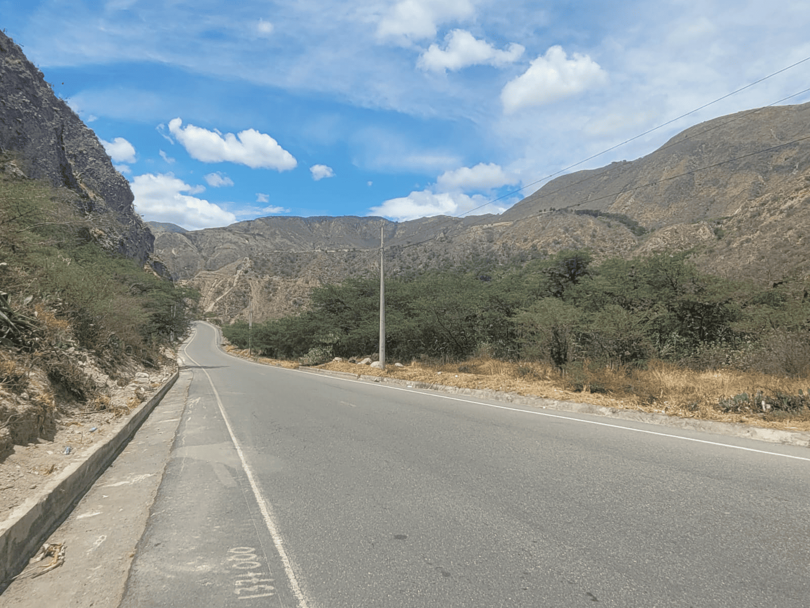
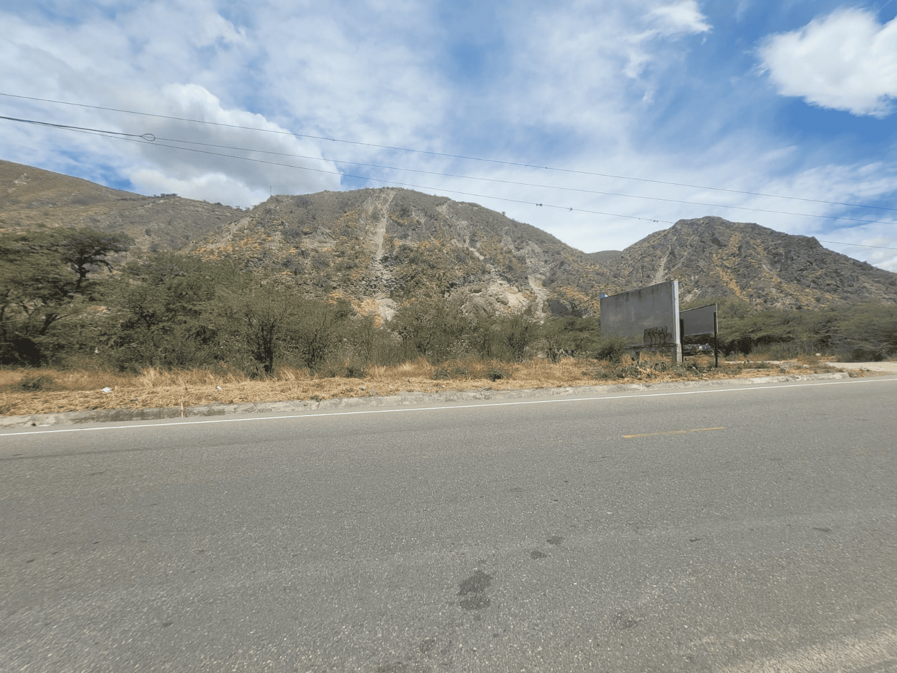
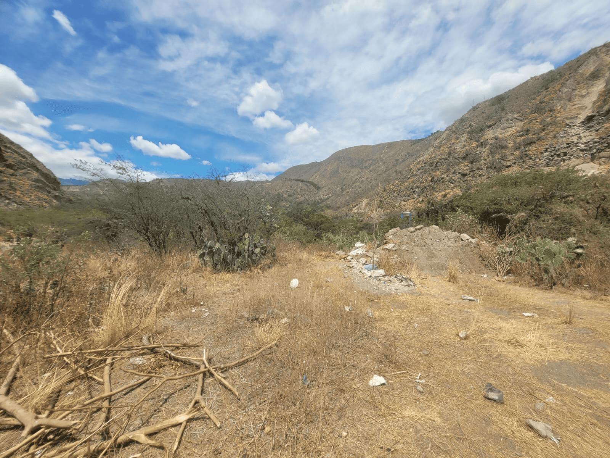
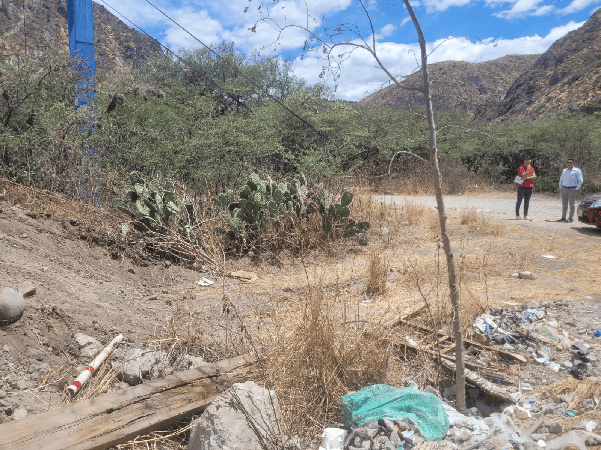
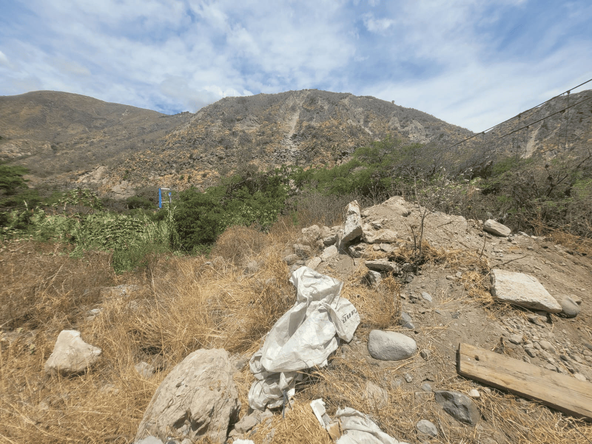
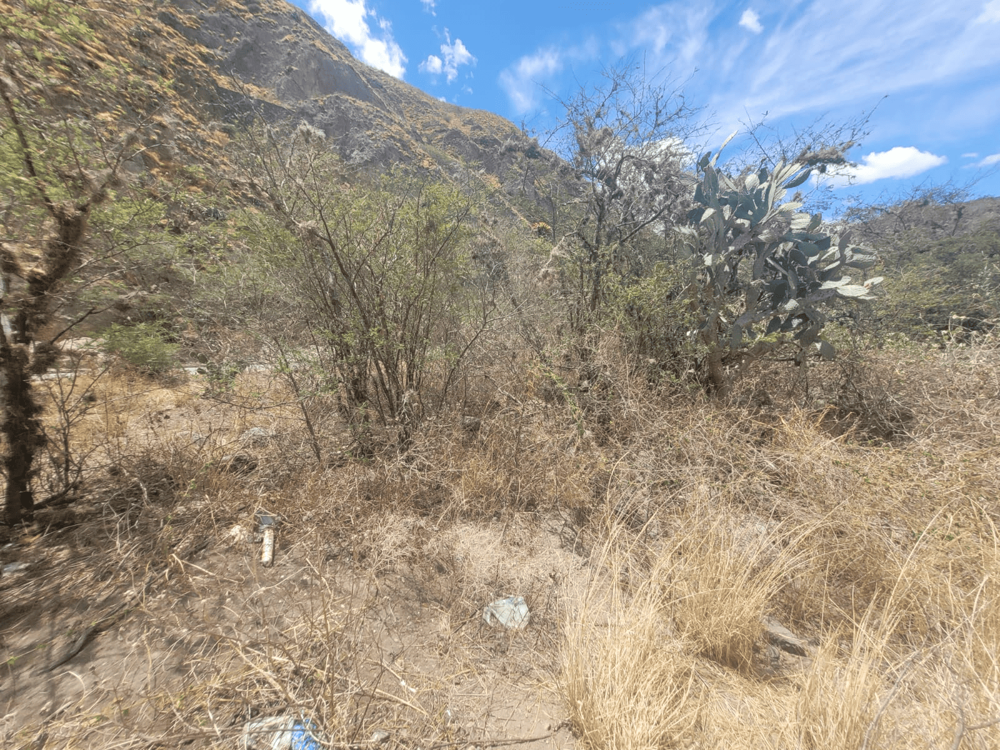
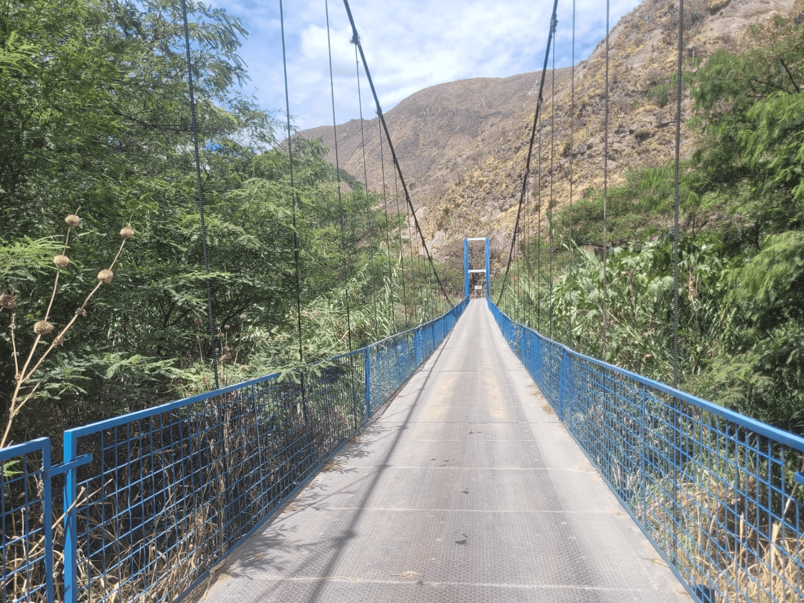
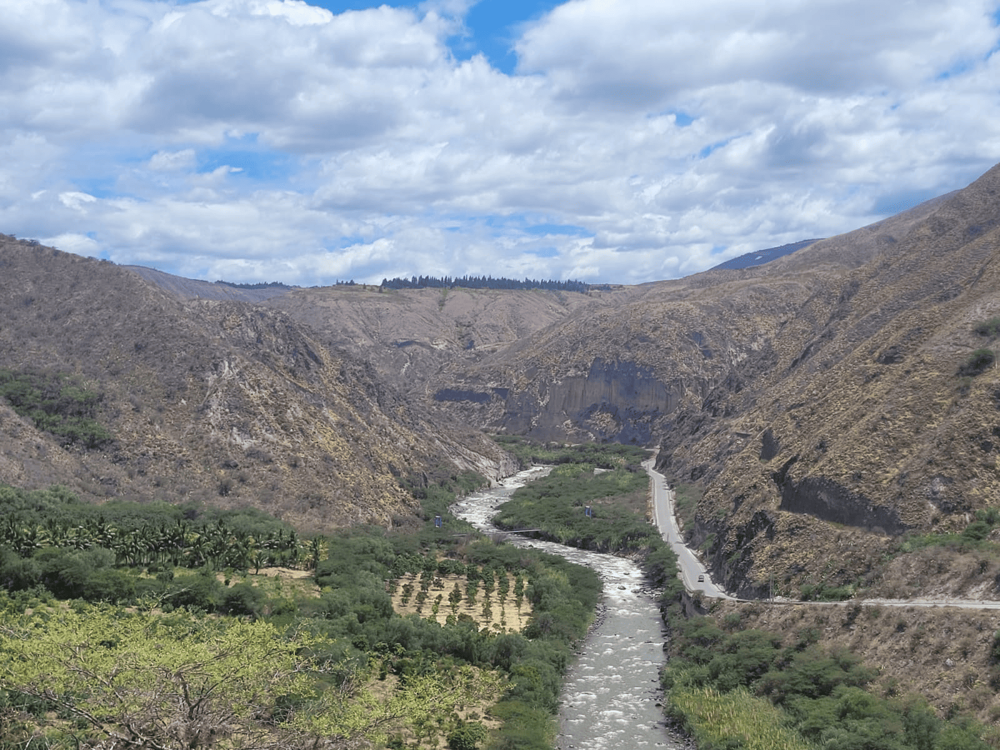

← volver al mapa
Terreno - EC-RJ-155978
EC-RJ-155978 · terreno · IBARRA, Imbabura








Datos del remate
| Avalúo pericial | $25,708 |
| Tipo de bien | terreno |
| Área de construcción | 0.00 m² |
| Área de terreno | 1.40 m² |
| Cantón / Provincia | IBARRA, Imbabura |
| Dirección / Sector | TULQUIZÀN. el lote en estudio se encuentra ubicado en la panamericana vía a lita, se encuentra al margen del río mira y una parte de la propiedad está junto al puente de ingreso a tulquizàn, en el sector rural en el punto denominado tulquizàn, parroquia salinas del cantón ibarra, provincia de imbabura. |
| Señalamiento | Tercer Señalamiento |
| Fecha de remate | 2026-09-16 |
| No. de proceso | 10333202100881 |
Análisis vs. mercado
Descartado del análisis automático: comparables insuficientes (4/5).
Descripción completa del avalúo
que no ??ene linderos definidos. no ??ene cerramiento.no existe ningún ??po de construcción.no cuenta con los servicios básicos.actualmente el terreno se encuentra sin uso.
el inmueble objeto de peritaje consta de un terreno medianero de forma irregular, de topogra??a plano y parcialmente con pendiente no cuenta con los servicios básicos, es un lote de terreno con vegetación seca, se encuentra ubicado en la panamericana vía a lita, se encuentra al margen del río mira y una parte de la propiedad está junto al puente de ingreso a tulquizàn, en el sector rural en el punto denominado tulquizàn, parroquia salinas del cantón ibarra, provincia de imbabura. no existen construcciones en el lote en estudio. una parte del lote en estudio se encuentra junto al puente de ingreso a tulquizàn. si ??ene afectaciones naturales. se encuentra al margen del río mira por lo que se deberá mantener una franja de protección. forma irregular estado el bien inmueble objeto de la pericia consta de un lote de terreno de forma irregular que no ??ene linderos definidos. es un lote baldío sin uso que consta de vegetación seca. no ??ene cerramiento. en el inmueble en estudio no existen construcciones. no ??ene servicios básicos ni agua de riego. frente frente en 276.37 m con panamericana vía a lita
el lote en estudio se encuentra ubicado en la panamericana vía a lita, se encuentra al margen del río mira y una parte de la propiedad está junto al puente de ingreso a tulquizàn, en el sector rural en el punto denominado tulquizàn, parroquia salinas del cantón ibarra, provincia de imbabura.
Límites: lote de terreno de uno coma cuatro hectáreas de superficie, ubicado en el punto denominado “tulquizàn” sector rural de la parroquia salinas del cantón ibarra, provincia de imbabura.- los linderos del lote de terreno materia del presente contrato son los siguientes: norte con varios posesionarios en cincuenta metros rumbo s setenta y un cero cinco sur con rocas terreno no laborables, en veinte metros rumbo n cincuenta treinta w este con margen izquierda del río mira en doscientos noventa y cinco metros rumbo variable por división oeste con panamericana que conduce de ibarra a lita en doscientos ochenta y dos metros rumbo n treinta y ocho cuarenta e superficie uno coma cuatro hectáreas
Clave catastral: 10015621004122000000000
Esta ficha es una copia de lo publicado en el sitio oficial de remates
judiciales de la Función Judicial del Ecuador, para consulta — no
reemplaza el expediente judicial. remates.funcionjudicial.gob.ec no da
un link propio por remate, por eso se generó esta página aparte.
Antes de ofertar, el expediente debe revisarlo un abogado.